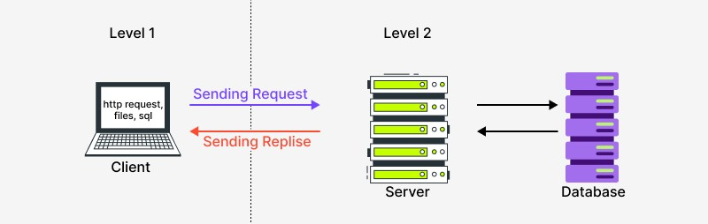
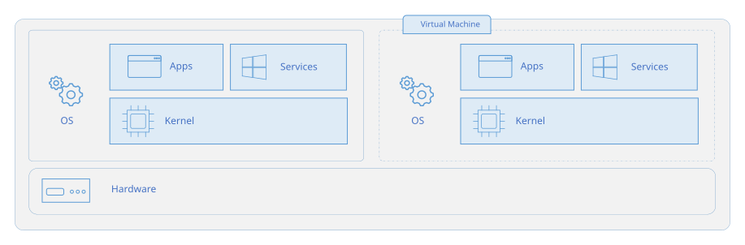
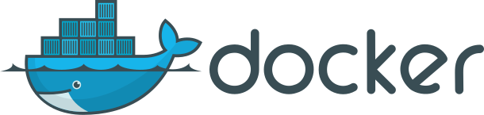
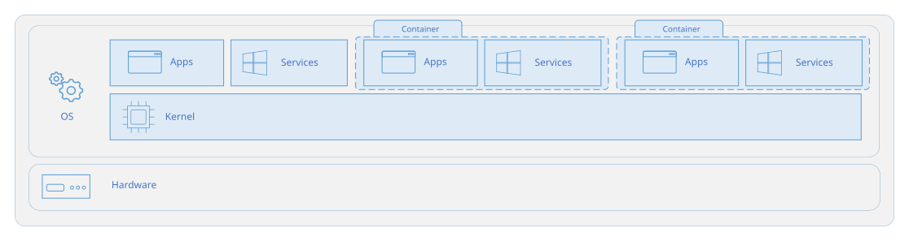
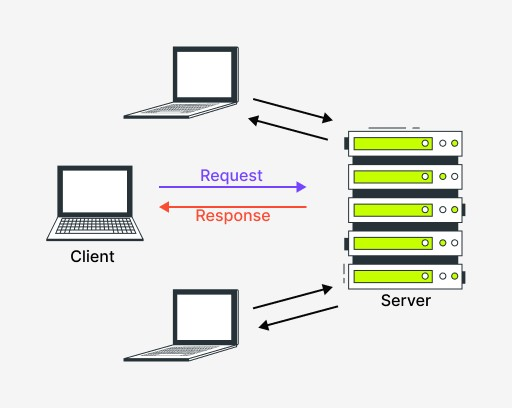

Architecture client-serveur
Sommaire
Révision du fonctionnement d’une architecture client-serveur.
Introduction à Docker pour créer une architecture client-serveur.
L’architecture client-serveur
. . .
Rappels sur ce qu’est un serveur
Le serveur matériel (hardware) : Une ou plusieurs machines physiques reliées entre elles et et sur lesquelles fonctionnent un ou plusieurs logiciels.
Source : Ionos
Dans ce TP, notre serveur physique sera notre ordinateur. En pratique, cela ressemble plus souvent à ça (serveurs WikiMedia foundation) :

L’architecture client-serveur
Rappels sur ce qu’est un serveur
Le serveur (software) : Un programme effectuant des interactions en réseau avec d’autres programmes appelés logiciels clients. Le service apporté dépend du logiciel serveur.
Source : Ionos
Un logiciel serveur peut-être un serveur Web (Apache, Nginx), un serveur email, un serveur de bases de données (PostgreSQL), un serveur cartographique (GeoServer), etc. Un logiciel client est par exemple un navigateur internet pour afficher un site web (Firefox, Google Chrome), un client mail (Thunderbird), et plus généralement une machine cliente.
L’architecture client-serveur
L’architecture client-serveur
Comment le serveur communique-t-il avec la source de donnée ?
En réalité, la plupart des applications fonctionnent de la manière suivante : le client envoie des requêtes au serveur. Le serveur va communiquer avec la base de données, traiter le résultat et renvoyer une réponse au client.
Exemple :
- Client = mon application Firefox
- Serveur = les serveurs de Google
- Database = la base de données de Google
- Requête = cherche les sites qui correspondent à la requête “apprendre le JavaScript”
- Réponse = liste des sites qui correspondent à la requête “apprendre le JavaScript”

Nos besoins
. . .
On souhaite servir des couches de données géographique avec GeoServer et pouvoir permettre à des applications clientes de les lire.
- Un client pour récupérer et afficher nos couches de données (Firefox, QGIS, …)
- Un serveur web cartographique (GeoServer)
. . .
Généralement, quand on développe une application, on a tout sur notre ordinateur (les serveurs et les clients) et on attend que l’application soit prête pour l’héberger sur un serveur dédié. On a deux possibilités : utiliser des machines virtuelles (VM) ou Docker.
VMs, Docker et Docker Compose
. . .
Les Machines Virtuelles (VM)
Il faut voir une machine virtuelle comme un ordinateur qui serait dématérialisé (sans composants matériels). Elle possède un processeur, de la mémoire, des espaces de stockage pour la donnée, elle peut se connecter à internet…
Outils de création de machines virtuelles : VirtualBox, VMWare…
Exemple : en téléchargeant VirtualBox, je peux créer une machine virtuelle Linux sur mon ordinateur Windows.

VMs, Docker et Docker Compose
Les Machines Virtuelles (VM)
Si je voulais mettre en place mon serveur sur une machine virtuelle, je devrais :
créer la machine (avec des caractéristiques suffisantes pour faire tourner l’application)
télécharger, installer et configurer GeoServer
éventuellement télécharger, installer et configurer une base Postgresql avec PostGIS et la connecter au serveur
refaire la même chose pour tout autre serveur que je voudrais installer (au hasard, un serveur pour une application OpenLayers)
etc.

VMs, Docker et Docker Compose
Les Machines Virtuelles (VM)
Multiplier les machines virtuelles sur l’hôte est très demandeur.
ressources divisées entre l’hôte et les machines
autant d’OS à faire tourner que de machines
chaque machine = plusieurs Go d’espace
C’est aussi difficile à maintenir - il faut garder tous les OS à jour, etc.
Mais nous, on aime la simplicité et éviter de consommer plein de mémoire “pour rien”.
VMs, Docker et Docker Compose
Heureusement…
…il existe des outils de containerisation comme Docker.

VMs, Docker et Docker Compose
Docker
Docker permet de faire tourner ce qu’on appelle des containers.
Les containers sont réduits au minimum nécessaire pour faire tourner des services (un serveur, une base de données, …).
Autre outil de containerisation : Podman

VMs, Docker et Docker Compose
Docker Compose
Sorti en 2013, Docker Compose permet de gérer des applications multi-containers.
Pour cela, on va rédiger un fichier de type
docker-compose.ymlqui va agir comme une “recette” pour permettre à Docker de créer et connecter l’ensemble des containers dont on a besoin.
Déploiement
Recette pour un bon GeoServer
Récupérez le contenu du dépôt GitHub du cours (voir notes du TP).
Notre Docker Compose
Explications sur le contenu :
services:
geoserver:
container_name: geonum_geoserver
image: docker.osgeo.org/geoserver:2.28.2
environment:
- RUN_UNPRIVILEGED=true
- CHANGE_OWNERSHIP_ON_FOLDERS="/opt /opt/geoserver_data/ /mnt/geoserver_geodata"
- CORS_ENABLED=true
- SKIP_DEMO_DATA=true
- PROXY_BASE_URL=${CODESPACE_NAME:+https://${CODESPACE_NAME}-8080.${GITHUB_CODESPACES_PORT_FORWARDING_DOMAIN}/geoserver}
- CATALINA_OPTS=-DGEOSERVER_CSRF_WHITELIST=${CODESPACE_NAME:-localhost}-8080.${GITHUB_CODESPACES_PORT_FORWARDING_DOMAIN:-local},localhost -DGEOSERVER_CSRF_DISABLED=true
ports:
- "8080:8080"
volumes:
- ./geoserver/opt:/opt/geoserver_data
web:
container_name: geonum_web
image: caddy:2-alpine
ports:
- "80:80"
volumes:
- ./Caddyfile:/etc/caddy/Caddyfile
- ./app/dist/:/srvÀ vous !
Poursuivez le TP jusqu’à réussir à vous connecter à votre GeoServer.
Comment le serveur communique-t-il avec les clients ?
Dans le cas des serveurs web et cartographiques, le client (par exemple notre Firefox) va envoyer des requêtes au serveur (par exemple GeoServer). Le serveur va lire la requête et renvoyer une réponse. Cette réponse peut-être une page web, un JSON, un flux cartographique, mais aussi un message d’erreur comme le fameux 404 not found.
